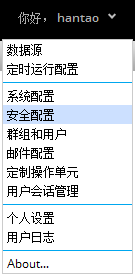
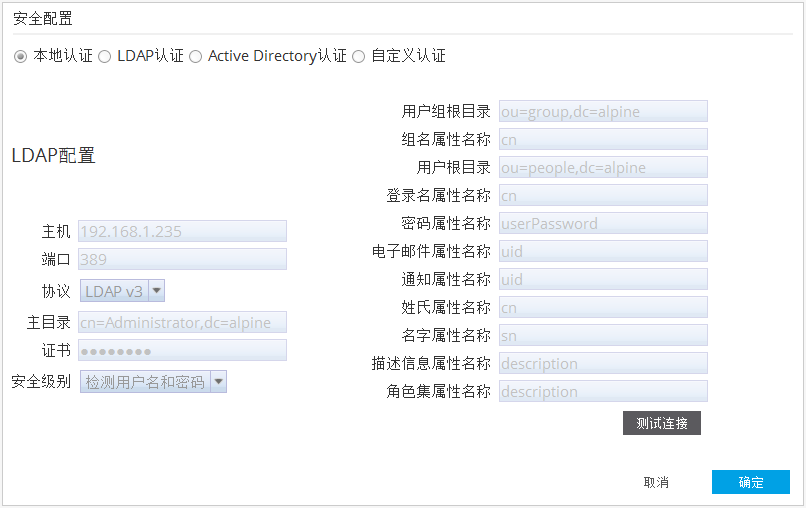
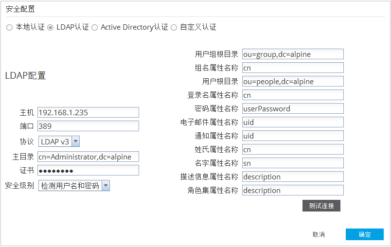
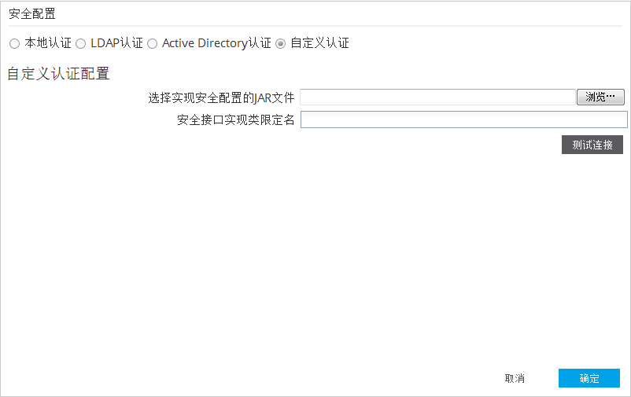
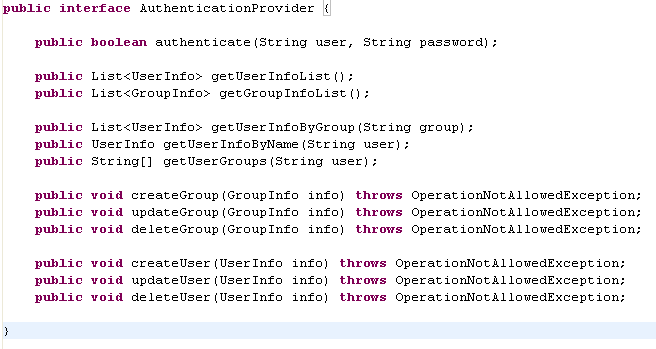
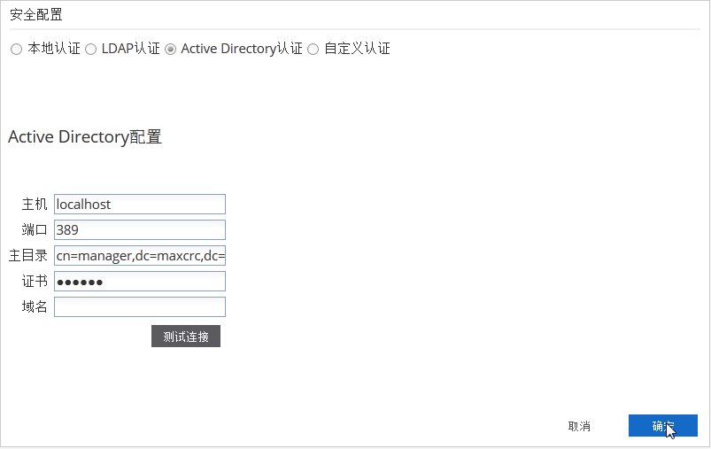

点击用户名后面的下拉菜单后点击安全配置按钮打开安全配置窗口。

Alpine 支持四种认证方式：本地认证，LDAP认证，Active Directory认证，自定义认证。

如果选中本地认证单选按钮，则不需要在界面上进行相关配置。用户和用户组将使用系统默认方式进行认证和管理。详情参见群组和用户管理。
当选中LDAP认证方式时，系统会打开LDAP配置界面，如下图：

当配置完成后，可以点击测试连接来测试是否可以连接LDAP 服务。
用户可以自定义一系列的Java Class实现自定义用户和用户组管理。以下是当自定义认证时，需要修改的地方以及所必需实现的接口声明： 需要实现的接口：com.alpine.miner.security.AuthenticationProvider

将包含实现代码的Jar文件拷贝到下面的目录中，并重启Web服务器： <tomcat install path>/webapps/AlpineIlluminator/WEB-INF/lib 以下是给出的接口定义：

当选中Active Directory认证方式后，系统会切换到Active Directory配置界面：
